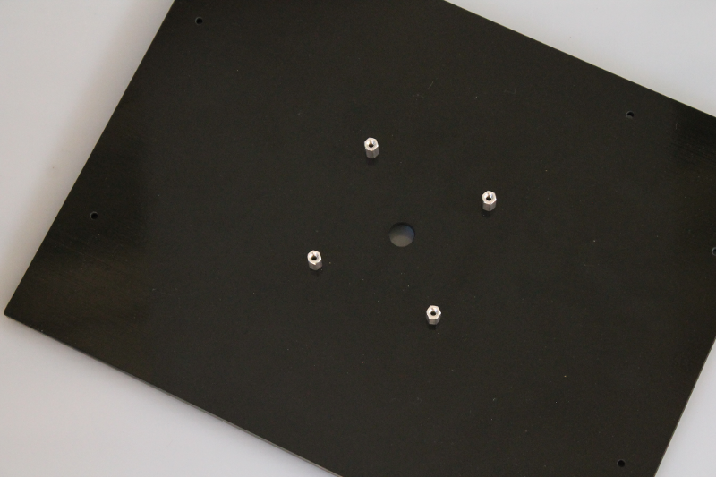
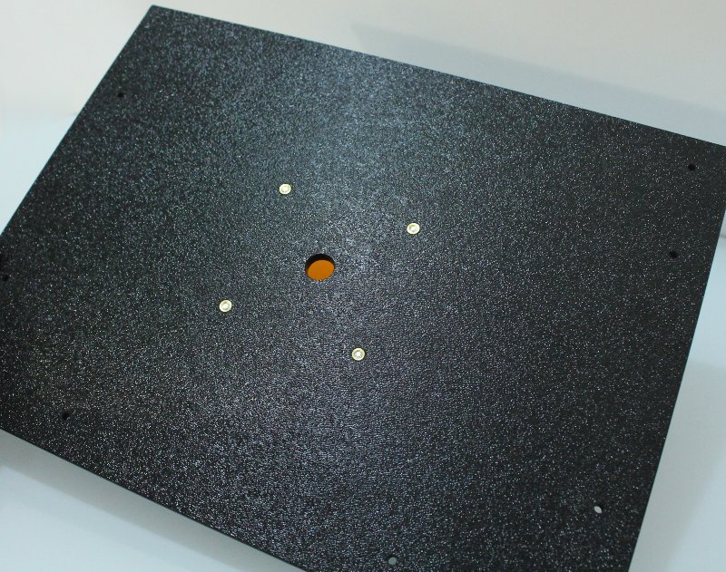

Step 5A: Smartphone Top Panel¶

Assembly steps¶
On the inside of the top panel mount the four filter standoffs¶
The standoffs will easily screw into the four holes with the heat-set inserts. No need to use a screw-driver or tool.

Mount the amber filter¶
Place the amber filter on top of the standoffs and position into place using the four thumbscrews.
View of the top with amber installed from the other side.
